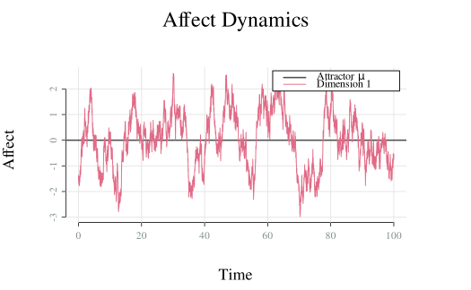
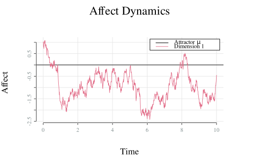
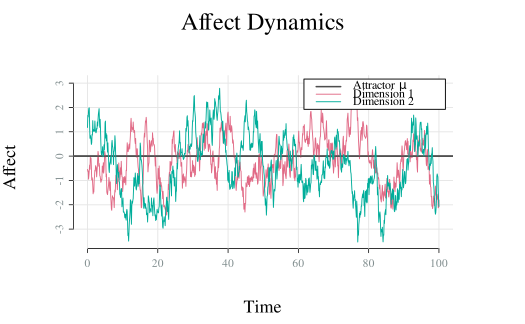
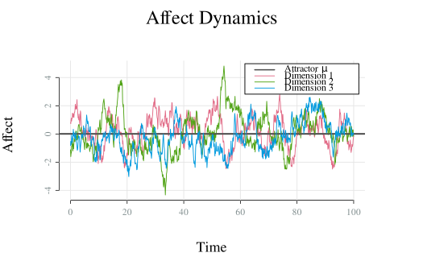

Create a model object representing an Ornstein-Uhlenbeck (OU) process for affect dynamics. Both unidimensional and multidimensional models are supported.
Arguments
- ndim
The number of affect dimensions modelled. Defaults to 1 (univariate). Only needs to be specified if it cannot be inferred from the dimensions of the other parameters. Must be a whole number of at least 1.
- theta
How quickly affect returns to baseline – low values mean feelings linger (inertia or rumination). Formally the attractor strength, or drift matrix. For 1D: a single number. For multidimensional: a square matrix, whose off-diagonal elements set the temporal coupling between dimensions. When
theta < 0, the model is non-stationary: the process is pushed away frommurather than toward it; whentheta \approx 0, the model is a random walk andmuhas no meaningful influence on the trajectory.- mu
The baseline affect the process returns to – a person's typical mood. Formally the attractor location. For 1D: a single number. For multidimensional: a vector with one element per dimension.
- sigma
How much random fluctuation drives each affect dimension, and how those fluctuations move together. Formally the noise covariance matrix (\(\Sigma = \Gamma\Gamma^\top\)). For 1D: a single number, the variance, which cannot be negative. For multidimensional: a symmetric, positive semi-definite matrix – symmetric because the covariance between two dimensions is the same in either direction, and positive semi-definite because otherwise some combination of dimensions would have a negative variance. Off-diagonal elements represent correlated noise between dimensions. This is the recommended way to specify noise structure. Specify either
gammaorsigma, not both.- gamma
How strongly affect responds to ongoing random fluctuation. Formally the diffusion coefficient (multiplies \(dW(t)\) in the SDE). For 1D: a single number. For multidimensional: a lower triangular matrix (the Cholesky factor of \(\Sigma\)); it must be lower triangular because it is the square root of a covariance matrix. Specify either
gammaorsigma, not both: each determines the other. Most users should prefer specifyingsigmadirectly;gammais available for advanced users who want explicit control over the Cholesky factorisation.
Value
An object of class affectOU, representing a univariate or multivariate
Ornstein–Uhlenbeck affect regulation model. The object is a list with the
following components:
parametersA named list of model parameters:
thetaNumeric matrix.
muNumeric vector.
gammaNumeric matrix.
sigmaNumeric matrix.
stationaryA named list with the stationary distribution properties, precomputed at construction:
is_stable(logical),mean(numeric vector orNULLif unstable),sd(numeric vector orNULLif unstable),cov(matrix orNULL),cor(matrix orNULL),ndim(integer).ndimInteger.
Details
The OU is a continuous-time stochastic differential equation model that, in its multivariate variant, can be written down as follows:
$$d\mathbf{X}(t) = \mathbf{\Theta} (\mathbf{\mu} - \mathbf{X}(t))dt + \mathbf{\Gamma} d\mathbf{W}(t)$$
which can be simplified in the one-dimensional case to:
$$dX(t) = \theta (\mu - X(t))dt + \gamma dW(t)$$
where:
\(\mathbf{X}(t)\) represents the affective state at time \(t\);
\(\mathbf{\Theta}\) (theta) represents the drift matrix, governing the rate at which affect returns to its baseline;
\(\mathbf{\mu}\) (mu) represents the location of the baseline or attractor;
\(\mathbf{\Gamma}\) (gamma) is a lower-triangular matrix governing the size of the stochastic diffusion;
\(\mathbf{W}(t)\) represents the Wiener process, adding randomness to the system.
Using the matrix \(\mathbf{\Gamma}\), one can derive the stationary covariance matrix \(\mathbf{\Sigma}\) for the system through using \(\mathbf{\Gamma}\) as the basis for the Cholesky decomposition and solving the Lyapunov equation, namely:
$$\mathbf{\Gamma} \mathbf{\Gamma}^T = \mathbf{\Theta} \mathbf{\Sigma} + \mathbf{\Sigma} \mathbf{\Theta}^T$$
In the multidimensional case, the off-diagonal elements of the drift matrix \(\mathbf{\Theta}\) determine the temporal coupling between the different variables contained in \(\mathbf{X}\), specifying how these variables co-evolve over time.
References
Oravecz, Z., Tuerlinckx, F., & Vandekerckhove, J. (2011). A hierarchical latent stochastic differential equation model for affective dynamics. Psychological Methods, 16(4), 468-490.
See also
simulate.affectOU()to generate trajectories.plot.simulate_affectOU()to visualize simulations (type = "time","histogram","acf","phase").summary.affectOU()for stability and the stationary distribution.fit.affectOU()to estimate parameters from observed data.update.affectOU()to modify parameters without recreating the model.
Examples
# 1D model
model_1d <- affectOU(theta = 0.5, mu = 0, sigma = 1)
summary(model_1d)
#>
#> ── 1D Ornstein-Uhlenbeck Model ─────────────────────────────────────────────────
#>
#> ── Dynamics ──
#>
#> Stable (node)
#>
#> ── Stationary distribution ──
#>
#> Mean: 0
#> SD: 1
#> ℹ Use `stability()` and `stationary()` for more details.
# Simulate trajectory
sim <- simulate(model_1d)
plot(sim)

# Simulate from a different initial state and a shorter period
sim <- simulate(model_1d, initial = 1, stop = 10)
plot(sim)

# 2D model (uncoupled)
model_2d <- affectOU(
theta = diag(c(0.5, 0.3)), mu = 0,
sigma = 1
)
summary(model_2d)
#>
#> ── 2D Ornstein-Uhlenbeck Model ─────────────────────────────────────────────────
#>
#> ── Dynamics ──
#>
#> Stable (node)
#>
#> ── Stationary distribution ──
#>
#> Mean: [0, 0]
#> SD: [1, 1.291]
#>
#> ── Structure ──
#>
#> Coupling: none
#> Noise: independent
#> ℹ Use `stability()` and `stationary()` for more details.
# Simulate trajectory
sim <- simulate(model_2d, stop = 100, save_at = 0.1)
plot(sim)

# 3D model (coupled)
theta_3d <- matrix(c(
0.5, 0.1, 0,
0.1, 0.3, 0.05,
0, 0.05, 0.4
), nrow = 3)
model_3d <- affectOU(
theta = theta_3d,
mu = 0, sigma = 1
)
summary(model_3d)
#>
#> ── 3D Ornstein-Uhlenbeck Model ─────────────────────────────────────────────────
#>
#> ── Dynamics ──
#>
#> Stable (node)
#>
#> ── Stationary distribution ──
#>
#> Mean: [0, 0, 0]
#> SD: [1.036, 1.351, 1.131]
#>
#> ── Structure ──
#>
#> Coupling: Dim 1 → Dim 2 (+), Dim 2 → Dim 1 (+), Dim 2 → Dim 3 (+), Dim 3 → Dim
#> 2 (+)
#> Noise: independent
#> ℹ Use `stability()` and `stationary()` for more details.
# Simulate trajectory
sim_3d <- simulate(model_3d, stop = 100, save_at = 0.1)
plot(sim_3d)
